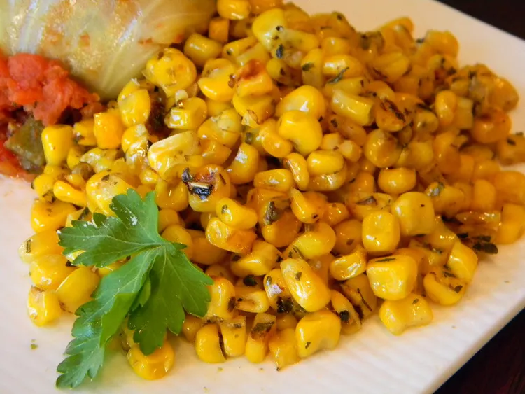

<<<<<<< HEAD

=======
>>>>>>> 25e09df16b8584b61dc764005c56c97ba780af6a
Italian Corn
Ingredients
- 1 ½ tablespoons butter
- 2 ½ cups whole kernel sweet corn
- 1 tablespoon Italian seasoning
- 1 pinch salt and ground black pepper
- Step 1- Heat a skillet over high heat. Heat butter in hot skillet until almost completely
melted; stir in corn. Season corn with Italian seasoning, salt, and black pepper.
Cook seasoned corn until light golden brown, about 5 minutes.